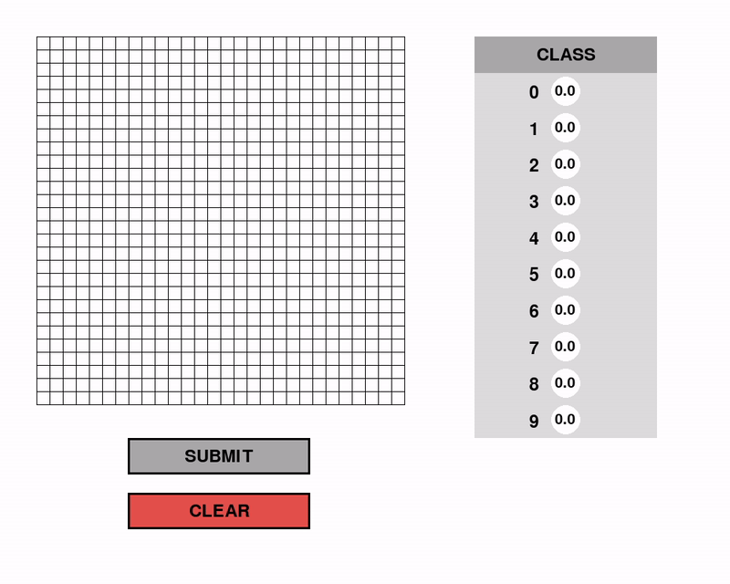
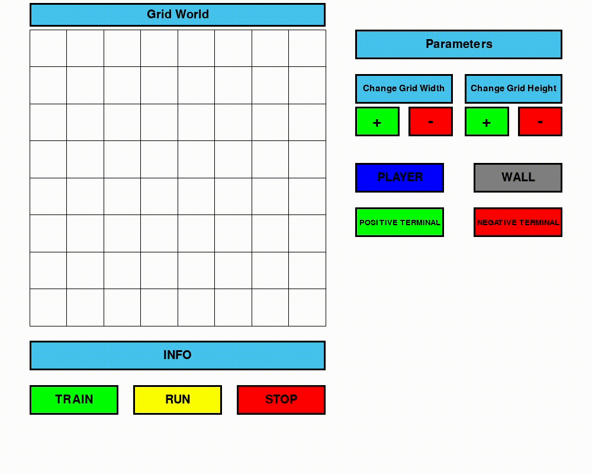
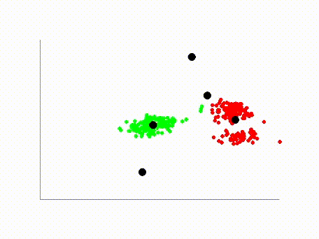

Digit Guesser with CNNs

I developed four distinct image classifiers for the classic MNIST dataset.
First, I implemented a convolutional neural network (CNN) using PyTorch as a baseline model.
Next, I created a neural network with a single hidden layer from scratch. Following this,
I built a flexible neural network from scratch, allowing for the dynamic addition of layers.
Finally, I developed a versatile CNN from scratch, enabling the selection of both the number of convolutional
and pooling layers.
Q-Learning in Grid World

This project involved implementing a Q-Learning algorithm from scratch.
The Blue Player utilizes a Q-table, which is updated with state-action values during the training phase.
In this phase, the agent explores the environment with a stochastic policy, gradually learning the optimal actions
by visiting various states. During the evaluation phase, or "Run," the agent adopts a deterministic policy,
using the Q-table to navigate the environment and maximize the accumulated reward.
NEAT Genetic Algorithm Implementation

This project involved implementing the NEAT (Neuro-Evolution of Augmenting Topologies) algorithm.
NEAT is an evolutionary algorithm that evolves both the structure (topology) and the weights of neural networks.
NEAT evolves neural networks by selecting the fittest individuals for reproduction,
while mutating both their topology and weights over generations to gradually improve performance.
The algorithm was applied on a simple platformer game, where the agent must learn when to jump over walls. As the training
progresses, the most successful network topologies are selected for reproduction leading to an increasing number of agents able
to complete the game.
K-Means Clustering

This implementation of K-Means clustering begins with a specified number of synthetic data clusters (5 in the video)
and a corresponding number of classifiers (also 5 in the video, to effectively match the data).
The clustering algorithm then iteratively assigns each data point to the nearest cluster center,
recalculates the centroids, and reassigns points until the clusters stabilize and no further updates occur.
Boids

This project implements a simple Boids simulation, where cell-like agents (boids) follow two fundamental rules to maintain flocking.
Each boid gradually adjusts its speed and direction to match the average speed and direction of nearby boids.
To optimize the simulation, instead of having each boid check all other boids in the environment every frame,
I partition the space into grid-like sections. When a boid enters a section, it is assigned to that section
and only needs to check the boids within the same section when updating its speed and direction.
This grid-based approach significantly reduces the computational overhead,
allowing the system to scale efficiently with a larger number of boids.